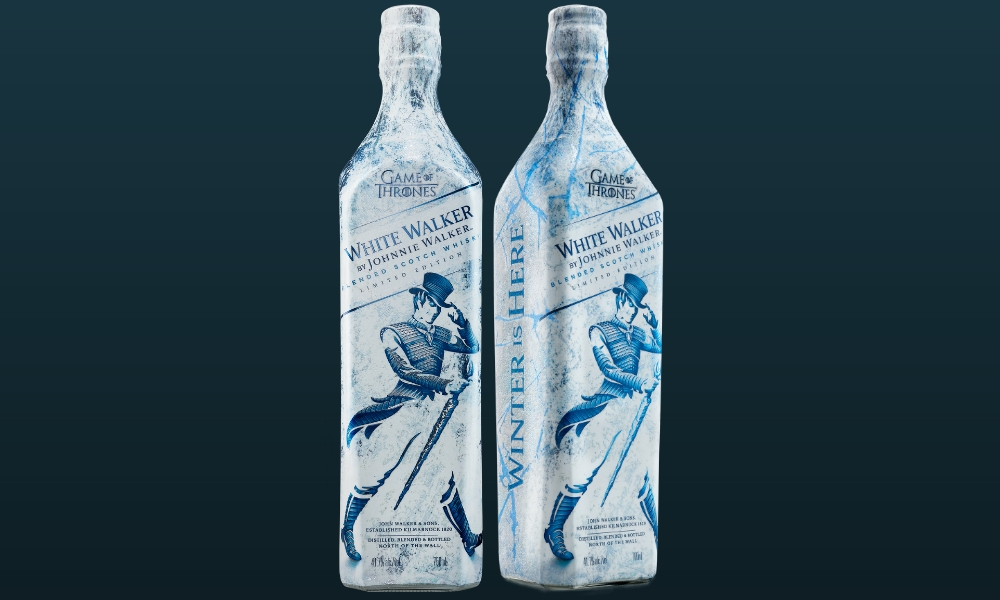
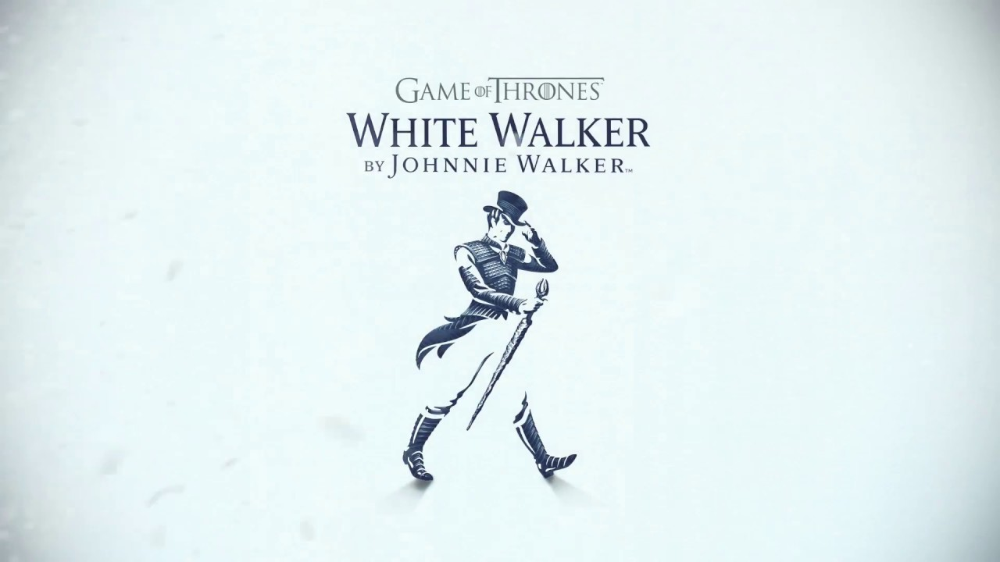

JOHNNIE WALKER Z GRY O TRON – JAK SMAKUJE WHITE WALKER?
Przejdź do notki smakowej >>Dzisiaj spotkanie z whisky „White Walker”, czyli specjalną wersją Johnnie Walker z Gry o Tron. Serial ten oparty na sadze George’a R.R. Martina pobił chyba wszystkie rekordy popularności przez co przeniknął także do świata alkoholi, gdzie w wyniku współpracy HBO i DIAGEO powstałą seria whisky poświęconych Grze o Tron. Dzisiaj spotkanie z jedną z nich!

Whisky Johnnie Walker z Gry o Tron swoją nazwę czerpie od Białych Wędrowców (ang. White Walkers), którzy w serialu są postaciami egzystującymi za murem. Biali wędrowcy w serialu to postaci nieumarłe, które walczą lodowymi włóczniami. Każdy kogo zabiją Biali Wędrowcy staje się jednym z nich. Jak widać, niezbyt mili goście 😀 Ponieważ kojarzą się oni z niekończącą się zimą na dalekiej północy, powstała whisky, która zachęca konsumentów do obniżania temperatury spożycia. Mam nawet wrażenie, że whisky ta działa – zobaczcie co stało się ze mną po degustacji 😉

Oczywiście White Walker (Johnnie Walker z Gry o Tron) budzi wiele pytań związanych z temperaturą podania. Whisky to blend bez deklaracji wieku więc spodziewać się można po nim raczej poziomu „do koktajlów”. Poprzez zastosowanie pigmentu termochromatycznego, producent sugeruje jednak podawania w bardzo niskiej temperaturze. Jak wiadomo, kiedy jest bardzo zimno język czuje mniej. Ciekawe zatem jest jak smakuje ta whisky zarówno w temperaturze pokojowej jak i zmrożona. Postanowiłem to sprawdzić w poniższej degustacji!

Kolor: Jasny olej
Nos: Na pierwszy rzut idą brzoskwinie, toffi i mocny alkohol. W zasadzie, spodziewałem się tego, biorąc po uwagę sugestie producenta, a mianowicie, że tę whisky należy pić mocno zmrożoną. Poza tym, drewno, melasa, gorzka czekolada, marcepan, cappuccino, słony karmel – bardzo wyraźny i bardzo przyjemny
Smak: Gorzki, przypalony karmel, wanilia, drewno, orzechy włoskie, słód, czekolada mleczna, odrobina dymu
Finisz: Drewno, karmel, wanilia, rukola, miód, orzechy włoskie, popiół. Bardzo długi – przynajmniej, kiedy degustuję w temperaturze pokojowej
Ocena:78/100
Nos: Na pierwszy rzut idą brzoskwinie, toffi i mocny alkohol. W zasadzie, spodziewałem się tego, biorąc po uwagę sugestie producenta, a mianowicie, że tę whisky należy pić mocno zmrożoną. Poza tym, drewno, melasa, gorzka czekolada, marcepan, cappuccino, słony karmel – bardzo wyraźny i bardzo przyjemny
Smak: Gorzki, przypalony karmel, wanilia, drewno, orzechy włoskie, słód, czekolada mleczna, odrobina dymu
Finisz: Drewno, karmel, wanilia, rukola, miód, orzechy włoskie, popiół. Bardzo długi – przynajmniej, kiedy degustuję w temperaturze pokojowej
Ocena:78/100